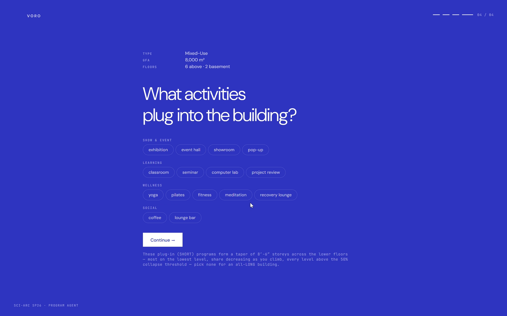
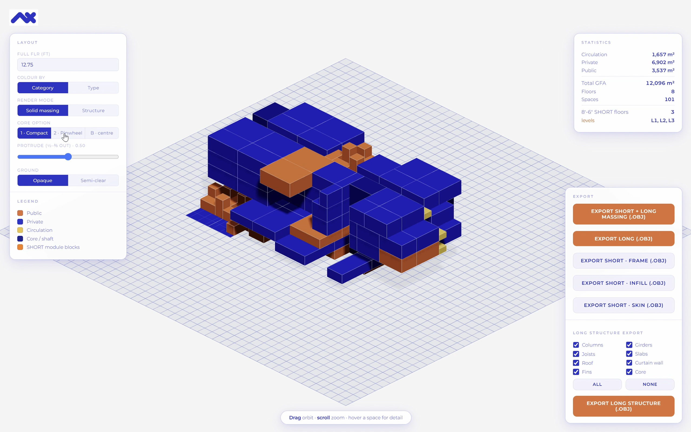
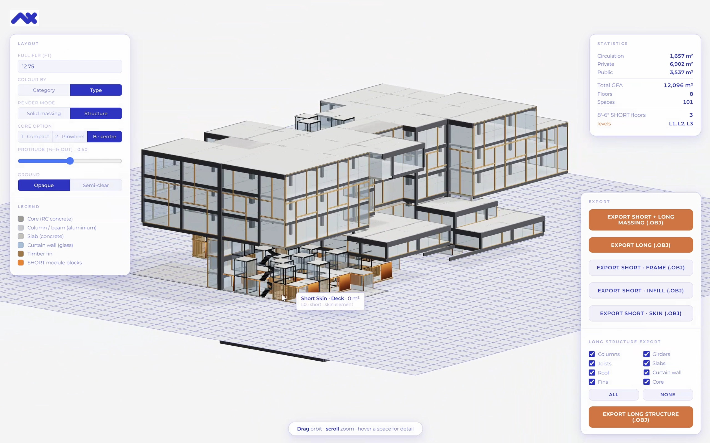
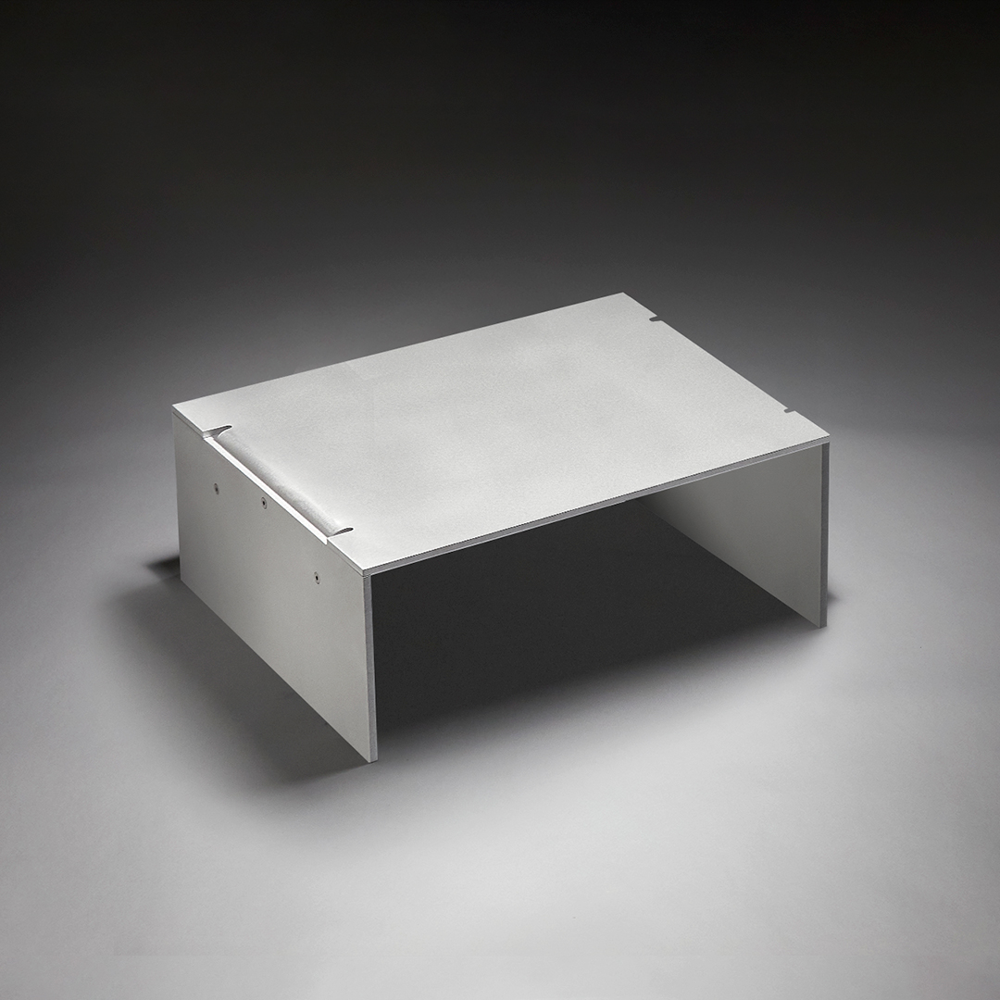
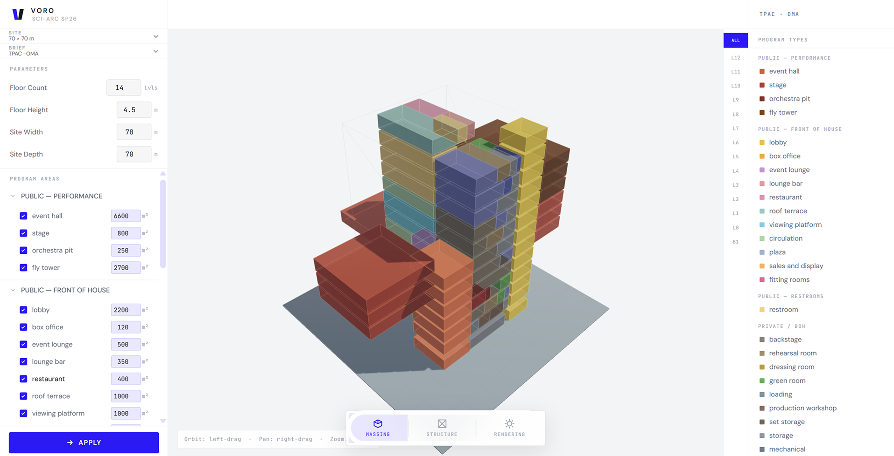
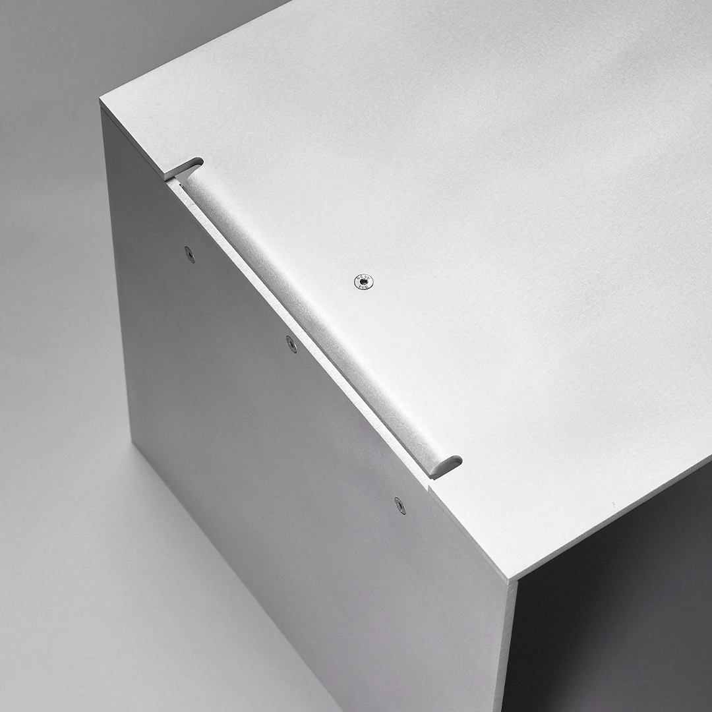
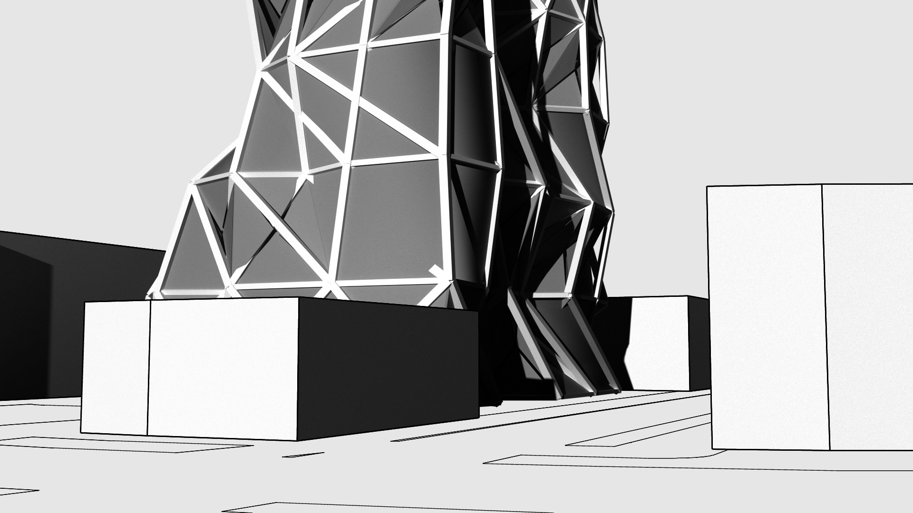
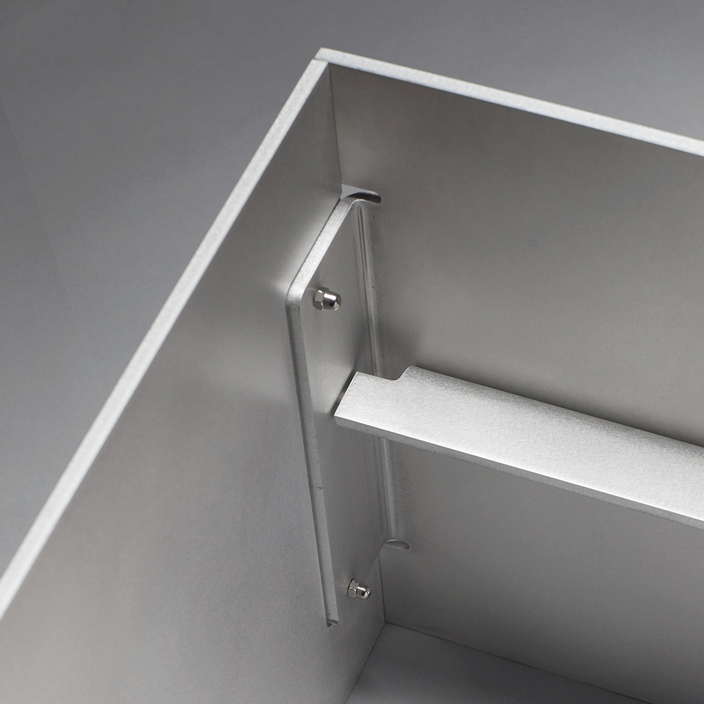
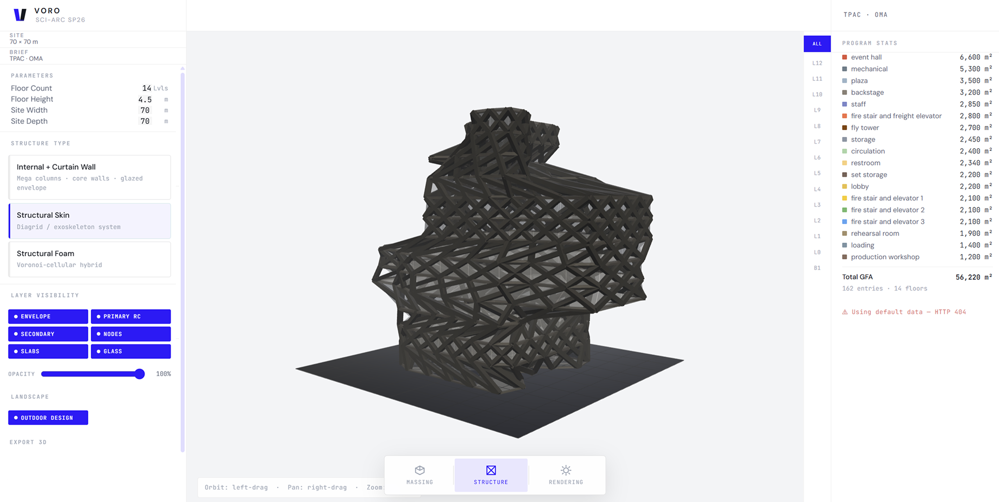

An adaptive building platform for long-lasting buildings that keep up with ever-changing uses.
NEXA pairs a permanent structure with plug-in, relocatable infill modules, coordinated through a digital twin, so buildings adapt to changing needs while extending their lifespan.
NEXA reads a building brief as structured data: every space, its area, its adjacencies, and how long it needs to last, then resolves it into a hybrid massing built for change.
One continuous tool takes the narrative brief, sorts it by lifespan, and resolves it into a permanent structure with relocatable modules. Every step stays editable and exports to OBJ.

Give NEXA the program, area and site. It reads how long each activity needs to last and sorts them into long-duration and short-duration programs.

The agent distributes the program into a massing, colour-coded by category, splitting the long-duration core from the short-duration 8'-6″ module blocks. Live stats track GFA, floors and SHORT levels.

Long programs become a permanent structure of RC core, aluminium frame, glass curtain wall and timber fins. Short programs become relocatable module frame, infill and skin, each exportable as OBJ and coordinated through a digital twin.
NEXA splits the building into two structural logics. The permanent frame goes up once; program modules, floors and partitions plug into it and can be swapped out later without touching what holds the building up.
Cores, mega-columns, primary structure and the ground it stands on. Sized once, for the life of the building, and left alone.
Program modules, partitions and the reconfigurable envelope, demountable by design so the building can be re-briefed without demolition.
Every volume the agent proposes resolves to the same physical unit, the 8'-6″ module.






Prototype fabrication studies and tool captures for the module system referenced by the massing agent. Not a commercial product.
Hand NEXA a brief and watch it resolve into a buildable hybrid massing — then re-solve it every time the needs change.